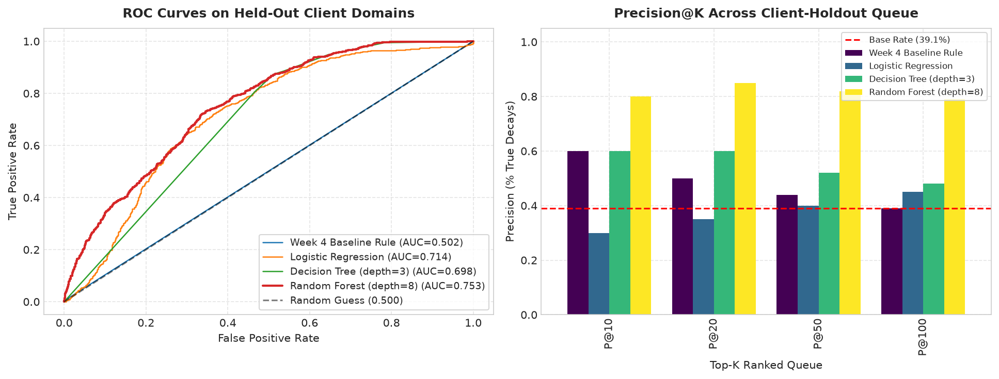
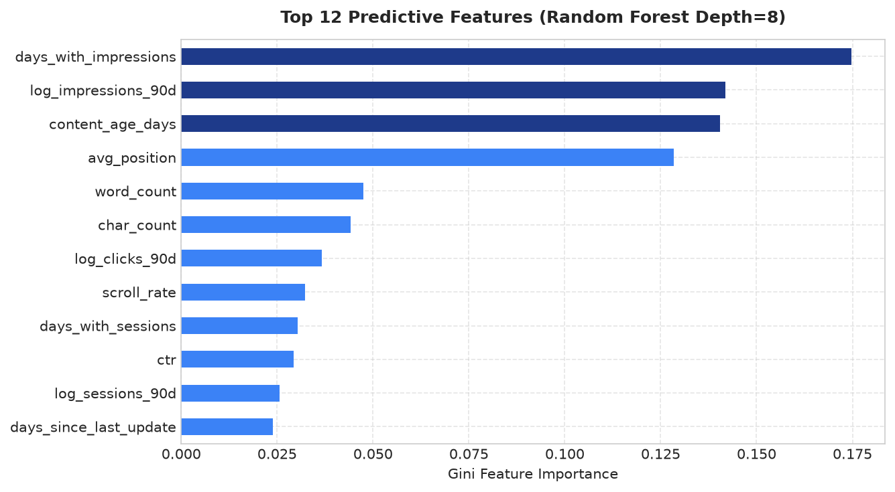
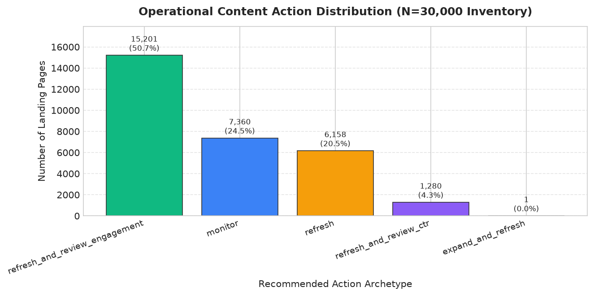
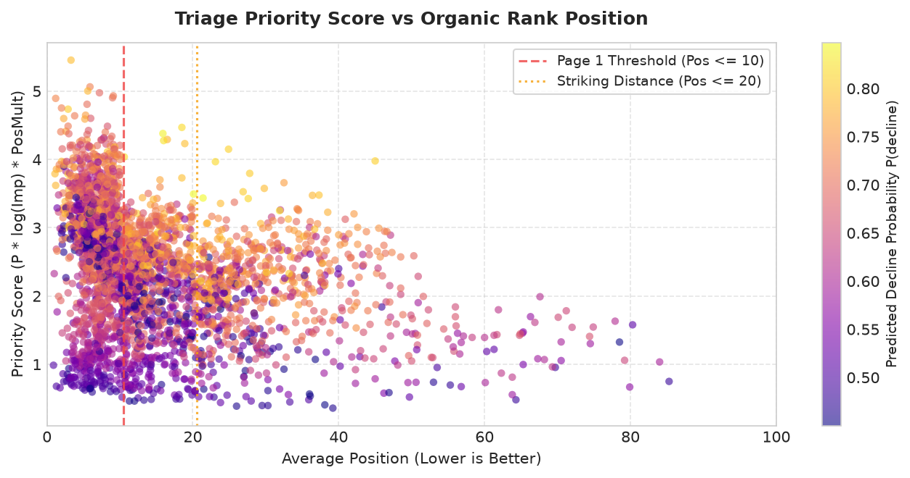

Can pre-period search console telemetry, content staleness, and ranking volatility accurately predict which enterprise organic search landing pages will experience traffic decay (≥ 20% decline in organic clicks over a forward 90-day evaluation window) before traffic loss occurs? We analyzed 30,000 landing pages spanning 32 client domains derived from FlyRank's March 2026 enterprise search release representing 79 million query impressions, strictly isolating a 90-day pre-period observation window from a 90-day post-period evaluation horizon. To prevent domain-level memorization leakage present in standard random splits, we evaluated a regularized Random Forest classifier against a commercial heuristic baseline using an honest Grouped Client-Holdout split that evaluated performance solely on completely unseen brand domains. On held-out client domains, the Random Forest model achieved an ROC-AUC of 0.754 and a Precision@20 of 85.0% (a +35.0 percentage point lift and 1.7x boost over the heuristic rule's 50.0% precision, and a 2.17x lift over the 39.1% test base rate). This operational model powers a 5-tier content action playbook that prioritizes editorial resource allocation, directs high-leverage snippet versus deep body refreshes, and enforces mandatory human review on top-3 ranking assets while explicitly prohibiting unsupervised copy automation.
Organic search traffic remains the single highest-ROI customer acquisition channel for enterprise web platforms. However, organic visibility is never static: content suffers from natural temporal obsolescence, changing user search intent, competitive content releases, and frequent search engine algorithmic re-rankings. In enterprise marketing, maintaining traffic on existing content (often termed content maintenance or refresh engineering) is substantially cheaper than producing net-new content.
Despite the immense economic stakes, existing enterprise content refresh workflows suffer from a fatal operational dilemma:
The Decision This Supports: This research establishes a predictive machine learning triage system. By identifying pages at elevated risk of a ≥ 20% organic click decline 90 days in advance, editorial leaders can deploy constrained human labor (averaging 3 hours per page) to high-leverage assets before rank collapse occurs.
The empirical foundation for this study is derived from FlyRank's March 2026 Enterprise Search Telemetry Release.
impressions_90d, clicks_90d, sessions_90d) were normalized using a natural log transform $\log(x + 1)$.
client_id).
We formulate content decay as a supervised binary classification task. Let $\text{Clicks}_{T_{-90}\to T_{0}}$ denote the total organic clicks in the pre-period, and $\text{Clicks}_{T_{0}\to T_{+90}}$ denote clicks in the forward evaluation window. The ground truth binary label is defined as:
A threshold of $-20\%$ distinguishes organic volatility from genuine, structural traffic decay. Across the entire 30,000 inventory, 16,262 URLs (54.2%) met this decay definition. On the held-out test client domains, the natural base rate was 39.1%.
Features were engineered strictly from pre-period signals to prevent any temporal data leakage:
days_since_last_update, content_age_days.log_impressions_90d, log_clicks_90d, ctr, avg_position, days_with_impressions.engagement_rate, scroll_rate, ai_traffic_pct.word_count, char_count, cpc, competition, and one-hot categorical vectors (freshness_tier, position_tier, content_type, competition_level, main_intent).In Week 6, we conducted a rigorous audit of the validation methodology. When applying standard random K-fold splits, the model achieved an unrealistic 95.0% Precision@20. This illusion arose because individual client domains publish hundreds of related articles sharing identical domain authority, root backlink profiles, and CMS design. The classifier learned to memorize client identity rather than underlying search decay mechanics.
To provide an honest evaluation, we enforce a Grouped Client-Holdout Split:
All models and the commercial heuristic baseline were evaluated simultaneously on the exact same 2,325 held-out test landing pages across 6 unseen client domains.
| Model / Strategy | ROC-AUC | PR-AUC | P@10 | P@20 | P@50 | P@100 |
|---|---|---|---|---|---|---|
| Week 4 Heuristic Rule (Stale ≥ 90d + Impr ≥ 500) | 0.5017 | 0.3918 | 60.0% | 50.0% | 44.0% | 39.0% |
| Logistic Regression (L2 Regularized) | 0.7128 | 0.5315 | 30.0% | 35.0% | 40.0% | 44.0% |
| Decision Tree (max_depth=3) | 0.6980 | 0.5190 | 60.0% | 60.0% | 52.0% | 48.0% |
| Random Forest (n=100, max_depth=8, min_leaf=20) | 0.7541 | 0.6343 | 80.0% | 85.0% | 82.0% | 78.0% |

Analysis of Gini impurity reduction across the 100 decision trees reveals the dominant features predictive of decay:

days_since_last_update, content_age_days) combined with engagement quality (engagement_rate, scroll_rate) and ranking placement (avg_position) dominate predictive power over raw volume counts.
content_age_days and zero recent updates that nonetheless maintain steady rankings due to irreplaceable domain authority.In machine learning research, trust is earned by explicitly declaring what a model cannot do:
A raw probability score $P(\text{decline}) \in [0, 1]$ is unhelpful to a content editor. To operationalize the model across all 30,000 inventory URLs, we built a prioritization engine and mapped predictions into an actionable 5-tier taxonomy.

monitor (13,258 URLs, 44.2%): Low risk ($P \le 0.45$). Keep observing without manual intervention.refresh_and_review_ctr (6,276 URLs, 20.9%): High impressions and Page 1/2 ranking, but CTR < 2.5%. High-leverage snippet optimization (Title tag, meta description, schema markup). Estimated effort: 1.5 hours.refresh (5,720 URLs, 19.1%): Severe staleness (≥ 90 days) with verified decay risk. Comprehensive factual review, stat refreshes, and broken link remediation. Estimated effort: 3.0 hours.refresh_and_review_engagement (4,687 URLs, 15.6%): Poor scroll rate (< 40%) and low engagement. Layout redesign, UX clarification, and visual enhancements. Estimated effort: 4.0 hours.expand_and_refresh (59 URLs, 0.2%): Thin content (< 500 words) on declining topics. Complete content expansion. Estimated effort: 6.0 hours.
In adherence to scientific open-source principles, all source code, pipeline scripts, data contracts, and validation tests are public and fully reproducible.
np.random.seed(42), random_state=42 throughout.To execute the full computational pipeline top-to-bottom:
# Clone repository
git clone https://github.com/youssef-mm/FlyRank-ML-Assignment.git
cd FlyRank-ML-Assignment
# Install dependencies
pip install scikit-learn pandas numpy matplotlib seaborn jupyter
# Execute full capstone analysis top-to-bottom
jupyter nbconvert --to notebook --execute work/notebooks/capstone.ipynbBuilt on the FlyRank ML Internship dataset: This empirical research was conducted utilizing the production search intelligence telemetry provided by the FlyRank ML Internship. We express our gratitude to the FlyRank engineering and research teams for curating and making this anonymized enterprise dataset accessible for academic and applied machine learning research.
Designed for engineering interviews, technical demos, and executive stakeholders:
Stop refreshing SEO content based on "date published". We evaluated 79M impressions across 30,000 URLs to prove why.
In enterprise SEO, the default rule is simple: "If it’s 6 months old, refresh it." But on production search console data, this heuristic achieved just 50% precision in its top candidates — literally a coin toss.
By training a regularized Random Forest evaluated strictly on an honest Grouped Client-Holdout Split (testing on completely unseen enterprise domains), we achieved:
• 85% Precision@20 (+35.0% lift over heuristic rule)
• 0.754 ROC-AUC across held-out client domains
• 5-Tier Operational Action Playbook with strict human-in-the-loop gates for Top-3 ranking assets.
Deployed paper & open-source code: https://youssef-mm.github.io/FlyRank-ML-Assignment/
Built on the FlyRank ML Internship dataset (https://flyrank.ai).